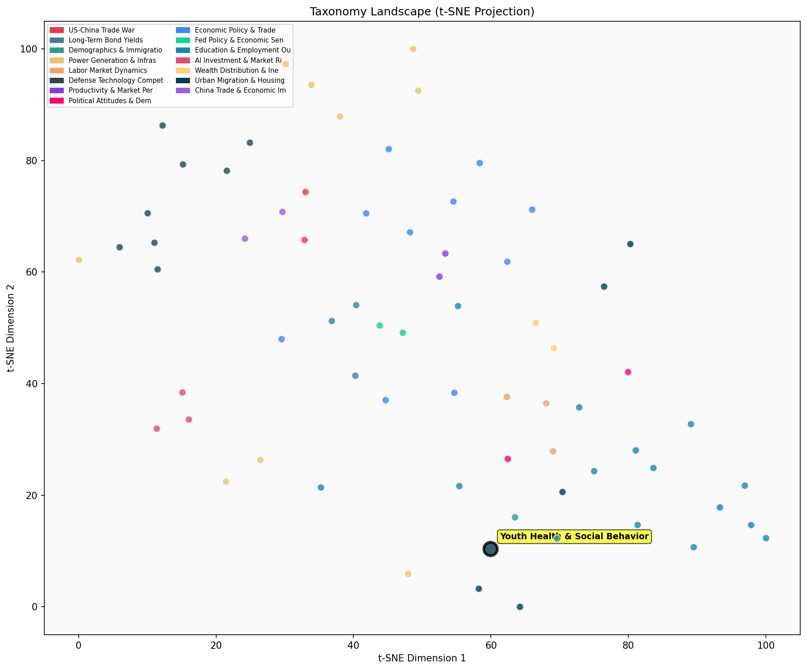

Description
This subcluster examines declining social engagement and behavioral patterns among young people, particularly those aged 15-25. Articles analyze reduced time spent socializing, attending parties, and engaging in traditional social activities, alongside trends in conscientiousness and mental health indicators. Data primarily comes from longitudinal surveys like the American Time Use Survey, educational assessments, and psychological studies tracking generational changes. Unlike sibling clusters focused on housing markets, population economics, or climate-related property risks, this subcluster centers on sociological and public health dimensions of youth behavior within urban contexts, exploring how changing social norms and digital lifestyles impact community engagement and individual development patterns.
Similarity to All 70 Subclusters
Each cell represents a subcluster. Color intensity shows similarity (blue=low, red=high). Black line marks current subcluster position.
Relationship to Primary Clusters
Average similarity to each of the 15 primary clusters. Larger area = stronger relationship to that cluster.
Taxonomy Landscape
All 70 subclusters positioned by similarity (t-SNE). Current subcluster highlighted with label. Click to enlarge.
Network Connections
Current subcluster at center, connected to related subclusters. Line thickness = similarity strength.
Most Representative Articles
-
1. Analysis by @TheEconomist suggests that mental health among US 12-18 year olds is improving: the per
-
2. The mortality rate for young Americans (aged 1-19) is at the highest level in 15 years, with boys’ m
-
3. Globally the mortality rate in the aftermath of the pandemic is running 5% above the 2019 baseline,
-
4. Citing @jean_twenge data @DKThomp highlights a 30% decline of teenage in-person socialization betwee
-
5. .@JonHaidt cites the percent of undergraduates diagnosed with a mental illness and argues that an ep
Edge Cases (Boundary Articles)
-
1. A team at Purdue University has created a white paint that reflects the sun's rays. The paint can maThis article about cooling paint technology has been misclassified, as it focuses on engineering innovation for temperature control rather than youth social behavior patterns. The article should be reassigned to the "Ocean Temperature Records & Climate Impact" cluster since it deals with temperature regulation technology that could have climate-related applications, making it much more relevant to environmental and climate topics than youth behavioral trends.
-
2. Researchers have found a mutation that protected a man with early stage Alzheimers from dementia untThis article is borderline because it focuses on a specific scientific discovery about Alzheimer's disease in an older adult rather than examining social behavior patterns or health trends among youth aged 15-25. The content is clearly about medical research breakthroughs rather than declining social engagement or behavioral changes in young people, making it a poor fit for the assigned cluster.
-
3. Viral spread metrics: Mean COVID R0=2.65 requires 62% immunity to halt growth. R0>1 = exponential spThis article is borderline because it focuses on COVID-19 transmission metrics and epidemiological data rather than examining declining social behaviors or engagement patterns among youth aged 15-25. The content is purely about viral spread calculations and immunity thresholds, with no discussion of how young people's social activities, party attendance, or behavioral patterns have changed.
Original Dendrogram